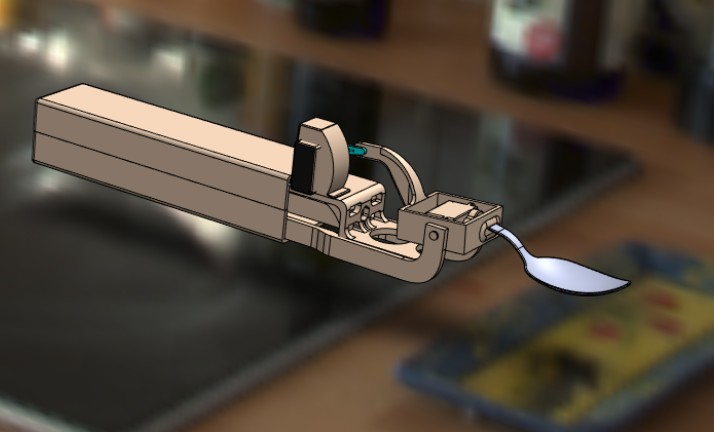

Project Objective
Designed and built a self-stabilizing spoon to assist patients with Parkinson’s disease in eating independently. The core principle was to counteract involuntary hand tremors in real-time using a combination of sensors, control logic, and actuation, restoring dignity and autonomy to daily dining.
Embedded Systems & Control
The system relies on a MEMS gyroscope to continuously measure angular disturbances caused by tremors. These signals are processed by a microcontroller running a high-speed control loop. The output drives a set of micro-servo motors mounted at the spoon head, actively compensating for unwanted motion to keep the bowl stable relative to gravity.
Mechanical Design
Modeled an ergonomically contoured handle and enclosure in SolidWorks to house the electronics and actuators. The design emphasized light weight, ease of grip, and food-safe geometry. The final prototype was fabricated using 3D printing and integrated with the embedded system to produce a fully functional device.
Awards & Recognition
-
Best Major Project Award within the Mechanical Department.
-
Secured 3rd Place out of 150 teams at the Innovation & Design Clinic 2022 organized by CMTI, Bengaluru.
-
Validated skills in mechatronics, CAD design, and rapid prototyping while demonstrating how engineering can directly improve quality of life.

FINAL_ASSEMBLY
3D CAD Render

INTERNAL_ARCHITECTURE
Actuator & Electronics Placement

MECHANISM_DETAIL
Gimbal Stabilization Unit